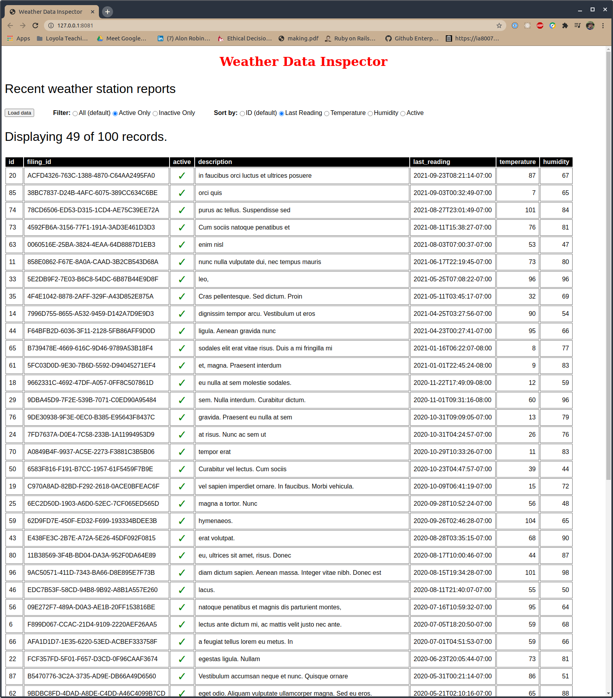

In this assignment, you’ll create a web client using plain HTML and JavaScript (and some CSS for styling if you like).
This web client will pull data from a remote web API and display it in tabular format, allowing a user to filter and sort it in various ways.
| Assigned | Tue, Oct 6, 2020 |
| Discussion/Lab class period | Thu, Oct 8, 2020 |
| Office hours | By appointment |
| Assignment Due | Tue, Oct 13, 2020 |
To complete this assignment, you need to write the body of the <script>
tag in the index.html file to add appropriate listeners to relevant HTML
elements for specific events. In addition, you’ll need to implement the
necessary JavaScript functions in assets/scripts/index.js to handle those
events and enable the relevant functionality.
As user stories, your requirements are:
For the purposes of this assignment, you will use fake weather station data
available from this API endpoint: http://dummy-data-api-server.herokuapp.com/data.
Specifically, based on the above user stories, your web page should:
Load data button by loading the data from the remote server(Note that you do not need to make a new request to the API for data unless the user clicks
the Load data button again. Because of this, it’s a good idea to separate the data loading
functionality of your JavaScript code from the table rendering functionality.)
For this assignment, loading your web page (served by a web server) should enable the above-mentioned requirements. An example of this might look like:

The project structure is a simple website structure using HTML for content structure, CSS for styling, and JavaScript for functionality. No front-end frameworks or libraries are used (or should be used) on this assignment.
In this repo, you will find several files:
index.html - this is the starting point for your project, and what will
load your JavaScript code and CSS styling rules.assets - a holding place for assets to be loaded by the HTML file(s).
assets/styles - a location where you can place any CSS files you create.
assets/styles/main.css - the starting point for your CSS styling.assets/scripts - a location where you can place any JavaScript files you create.
assets/styles/main.js - the location where you should put any functions
directly referenced by the index.html file. (There is a comment at the top of
this file with information that may be helpful.)There are comments througout the index.html file indicating locations where specific
work should happen within the file. Please read and pay attention to these, as they
will help you complete the assignment.
You may note that the
masterbranch has been changed to themainbranch. This is in response to current events, recognizing the lingering master/slave connotation of the existingmasterbranch naming, and desiring to make branch naming more inclusive. These changes are being made to bothgitand to Github. For more on these changes, see this pull request togitand Github’s README on their work. Gitlab is also making similar changes, as are others.
As with prior assignments, in order to get started with the assignment, you’ll want to do the following things:
index.js and assets/scripts/main.jsUnlike prior assignments, there are no automated tests for this assignment. (There could be, but creating them is fairly involved, and it’s easer for this simple assignment to verify by running your code directly.)
You must submit your changes as commits to the main branch on the repository.
Github Classroom will create a pull request on the repository for you, titled
Feedback. As you push your commits on the main branch up to Github, they
will be added to the activity on this pull request.
In addition to the synchronous mechanism of requesting help via office hours appointments, this pull request will be your mechanism for asking questions and requesting help asynchronously during the course of this assignment. I will also use this pull request to provide feedback on your work. I will provide feedback on the completed assignment within a week of the due date of the assignment. If you push your code earlier than the due date, I will try to provide feedback as needed earlier.
I suggest that you push your work to Github as you make commits, and that you make
commits frequently as you work on the assignment. This way, if you have questions,
I will be able to review your work-in-progress and give more relevant answers and
feedback. If you have a question specific to a particular area of the code, note that
you can add comments inline on the pull request by clicking on the Files changed tab
of the pull request, then clicking the little blue + icon that appears when you hover
over a specific line of code.
I will do my best to respond to questions posed during the course of the assignment with
in a day of the ask. If you want to ask a question or request early feedback, please tag
me in a comment on the pull request: @nihonjinrxs.
Good luck, and I look forward to seeing what you create!